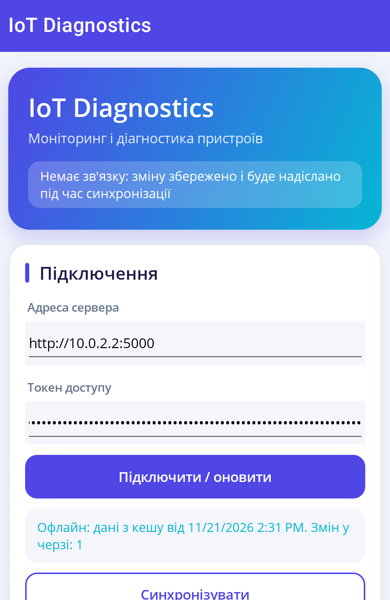

Що показувати й говорити
- 0:00–0:35
Представити проєкт і свою частину
Відкрий запущений застосунок. Покажи поле адреси й картку приладу.
СказатиЯ Тарас Загорський. Платформа перевіряє HTTP API IoT-пристроїв, зберігає вимірювання та створює попередження. Я відповідав за клієнт .NET MAUI для Android і Windows. Реалізував роботу з пристроями, редактор запитів, відображення результатів та офлайн-режим із синхронізацією. Зараз покажу це на Android. - 0:35–1:35
Підключити пристрій і виконати тест
Натисни Підключити / оновити → Оберіть пристрій → Demo sensor. У блоці HTTP тест залиш
GET, шляхsimulator/normalі натисни Виконати тест. Покажи HTTP 200, мілісекунди та JSON.СказатиКлієнт надсилає налаштування тесту на ASP.NET Core API. Сервер звертається до симулятора та зберігає вимірювання. На екрані видно HTTP-статус відповіді пристрою, час і тіло JSON. - 1:35–2:45
Викликати аномалію і показати графік
У правилі вже задано
temperatureвід0до40. Заміни шлях наsimulator/out-of-rangeй виконай тест. Покажиtemperature: 150, попередження та історію. Для графіка залишtemperatureі натисни Оновити графік. За наявності часу підтвердь нове попередження або відкрий Експортувати CSV.СказатиСимулятор повернув HTTP 200, але температура 150 виходить за межі. Сервер створює попередження, а клієнт показує його поряд з історією. Для довгих рядів графік обмежує кількість точок до 120 і зберігає форму сигналу через LTTB. - 2:45–4:15
Показати кеш, чергу і синхронізацію
Залиш Demo sensor вибраним. Увімкни режим польоту на Android, перевір, що Wi‑Fi також вимкнено, і зачекай кілька секунд, поки з’єднання розірветься. Зміни поле Опис на
android-offlineі натисни Зберегти. Покажи час кешу й лічильник черги. Віднови мережу, натисни Синхронізувати. Покажи надіслано 1, відхилено 0 і після повторного вибору пристрою звір опис.СказатиПісля втрати зв’язку клієнт читає список із локального SQLite та записує зміну в чергу. Коли мережа відновлюється, SyncEngine надсилає зміну. Повторне завантаження підтверджує, що опис є на сервері. - 4:15–5:15
Відкрити свої PR і рев’ю
На комп’ютері відкрий ланцюг №92 → №112. Клацни коміти, рев’ю Назара й merge. Потім покажи власні рев’ю, почни з №102.
СказатиУ PR №112 я підключив офлайн-репозиторій до екрана і додав кнопку синхронізації. Назар перевірив відключення API та повторну синхронізацію. У чужому PR №102 я відтворив помилку, коли некоректний JSON давав 500 замість 400, а після виправлення повторно перевірив відповідь. - 5:15–6:00
Підтвердити результат тестами
Відкрий результати та покриття. Покажи також Forgejo Actions, знайди ed8d284.
СказатиНа коміті ed8d284 пройшли 245 модульних і 110 інтеграційних тестів та 11 приймальних перевірок. Coverlet показав 96,2% покриття рядків для збірок, які перевіряли автотести. Під час демонстрації можна звірити, що офлайн-зміна дійшла до сервера.
Докази за критеріями
B1 / D1 Мій внесок і ланцюг виконання
Issue №92 → гілка feature/issue-92-offline-state-sync-app → PR №112 → коміти dd30c666, 6bd747da → рев’ю Назара → merge в main.
У MainViewModel підключив DeviceRepository до завантаження й редагування пристроїв. Локальні зміни переживають закриття застосунку завдяки SQLite. SyncEngine повторює операції з черги, лишає невідправлені після втрати зв’язку та фіксує відхилення сервера.
Типізований API-клієнт №85 · Кеш і черга №89 · Графіки №96 · Інтеграційні тести №37
B2 Хто які задачі закрив
| Учасник | Виконано | Приклади задач |
|---|---|---|
| Тарас | 14 / 14 | MAUI, HTTP тест, офлайн, графіки. №92, №91, №86 |
| Назар | 21 / 21 | API, модель даних, події. №98, №95 |
| Іван | 16 / 16 | Діагностика, валідація та воркери. №103, №94 |
| Денис | 11 / 11 | CI, SonarQube, приймальні перевірки й надійність. №119, №100 |
Спільні задачі враховано кожному виконавцю. Строки в полях задач відсутні, своєчасність слід підтвердити датами командних чекпоінтів. Закриті задачі
B3 Чотири результативні рев’ю Тараса
- №102. Некоректний JSON на .NET 10 повертав 500. Після виправлення відтворив сценарій і підтвердив 400. Зауваження · Перевірка
- №33. Новий пристрій без вимірювань повертав 404 у статистиці. Перевірив підсумок 0 із 0. Зауваження · Перевірка
- №28. Запит до пристрою міг зависнути. Запропонував таймаут і збереження збою у вимірюванні, після виправлення перевірив обидві дії. Зауваження · Перевірка
- №16. Оновлення неіснуючого пристрою могло дати 500. Після виправлення підтвердив 404. Зауваження · Перевірка
C0–C4 Платформи, тести, крайні випадки й аналіз
C0. Основний показ — Android. За пам’яткою живий показ однієї ОС дає 0,5 рівня C0, двох або більше — 1,0. Якщо команда має Windows, можна повторити короткий HTTP тест наживо.
C1. 11/11 приймальних перевірок у локальному прогоні для ed8d284. Перевірено доступ, валідацію, запис усіх п’яти сценаріїв симулятора, воркери та їхні журнали. Результат прогону · Сценарій тестів
| C2 · Випадок | Як відтворити | Підтверджений результат |
|---|---|---|
| Валідація введення | Створити пристрій із порожньою назвою та URL ftp://x. | API відхиляє запит з HTTP 400. |
| Некоректні дані | Виконати тест simulator/invalid-json. | Помилку JSON зафіксовано у діагностиці вимірювання. |
| Виняток / таймаут | Виконати simulator/timeout із лімітом 1000 мс. | Таймаут записано як помилку вимірювання, API продовжує працювати. |
| Межові значення | Задати інтервал моніторингу 4, 5, 86400 і 86401 с в інтеграційному тесті. | 5 і 86400 прийнято, 4 та 86401 відхилено. |
| Журнали прогону | Перевірити логи API і двох воркерів після приймального тесту. | Немає записів fail:, crit: і Unhandled exception. |
Тести граничних значень · Тести симулятора
Відоме обмеження Android-клієнта на ed8d284. Під час підключення без дійсного токена HTTP 401 спричиняє закриття застосунку. Перезапусти його й встав свіжий токен.
C3. 245 unit + 110 integration, 0 збоїв. Coverlet / ReportGenerator — 96,2% рядків (2965 / 3082) і 91,1% гілок (1356 / 1487). Локальний прогін macOS, шість збірок без MAUI та згенерованих міграцій. У CI поріг покриття рядків 80%. Підсумок тестів · Підсумок інструмента · Зелений CI для PR №112 · Зелений CI коміту ed8d284
C4. На ed8d284 пройшов workflow SonarQube. У цьому коміті змерджено виправлення зауважень. На попередньому локальному прогоні для 39ac333 Quality Gate також пройдено. Для оцінки щільності critical/major відкрий актуальну панель SonarQube. Попередній локальний прогін · SonarQube для ed8d284 · Виправлення SonarQube №120

C5 Цілісність даних
- Нормалізація. Пристрої, правила, вимірювання та події в окремих таблицях.
DeviceStatuses— денормалізована проєкція для швидкого читання. - Ключі та обмеження. FK зв’язують правила й вимірювання з пристроями. Є унікальна назва й перевірки меж.
- Індекси. Історія шукається за
(DeviceId, Timestamp), події — за вимірюванням і станом підтвердження. - Параметризація. EF Core та параметри SQL у локальному SQLite-кеші.
- Транзакції. Вимірювання, попередження та подія outbox записуються атомарно. У клієнті транзакції захищають оновлення кешу та злиття черги.
E3 Запуск із README
З кореня репозиторію запусти API. Використовуй тестовий токен тільки в локальному демо.
docker compose up --buildУ другому терміналі отримай тестовий токен. Скопіюй значення token в поле застосунку.
curl -fsS -X POST http://localhost:5000/api/auth/token \
-H 'Content-Type: application/json' \
-d '{"user":"demo","role":"Admin","group":"default"}'Збери Android APK і встанови на запущений емулятор. Потрібні .NET 10, MAUI, Android SDK, JDK і adb.
dotnet workload restore src/IoT.Mobile/IoT.Mobile.csproj
dotnet build src/IoT.Mobile -f net10.0-android -p:EmbedAssembliesIntoApk=true
adb install -r src/IoT.Mobile/bin/Debug/net10.0-android/com.companyname.iot.mobile-Signed.apkЯкщо .NET не знаходить JDK або Android SDK, передай шляхи до них через -p:JavaSdkDirectory=… і -p:AndroidSdkDirectory=…. Локальний запуск API без Docker описано в README.
Резервні скриншоти
Кеш і синхронізацію перевірено в Android-емуляторі на ed8d284. Сервер отримав зміну після відновлення зв’язку. Натисни, щоб відкрити зображення у повному розмірі.




Питання й мікрозміни
E1 Три короткі відповіді
- Де виконується HTTP-запит до пристрою?
- На сервері, тому базова адреса пристрою має бути доступна саме серверу. Емулятор звертається до API через
10.0.2.2. - Що відбувається зі зміною після втрати зв’язку?
- Клієнт записує її в SQLite, а після ручної синхронізації SyncEngine відправляє операції. Мережевий збій лишає невідправлені операції для повтору.
- Навіщо скорочувати кількість точок графіка?
- Щоб телефон швидше малював довгу історію. LTTB вибирає точки за площею трикутників, зберігає хронологічний порядок і крайні точки ряду.
E2 Дві вправи на випадок зміни умови
- Ліміт графіка 80 точок. У
src/IoT.Mobile/MainViewModel.csзміниChartPointsзі 120 на 80. Перезбери клієнт і онови графік для історії з понад 80 коректними значеннями. - Таймаут за замовчуванням 2000 мс. У тому самому файлі зміни початкове
timeoutMs = "5000"на"2000". Перезапусти клієнт після збірки, перевір поле й виконайsimulator/timeout.